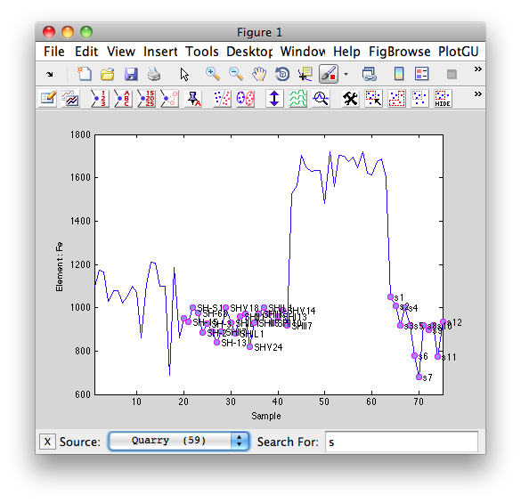
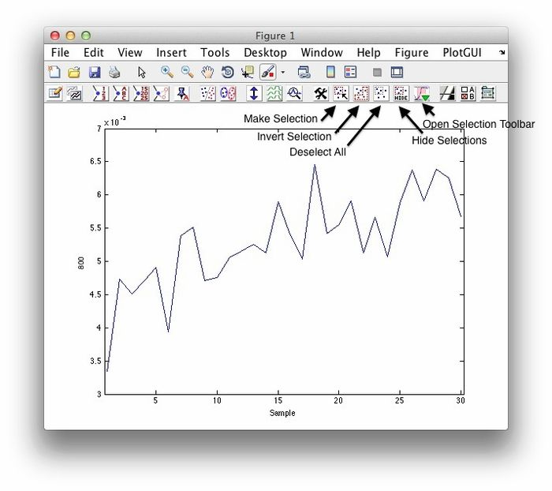
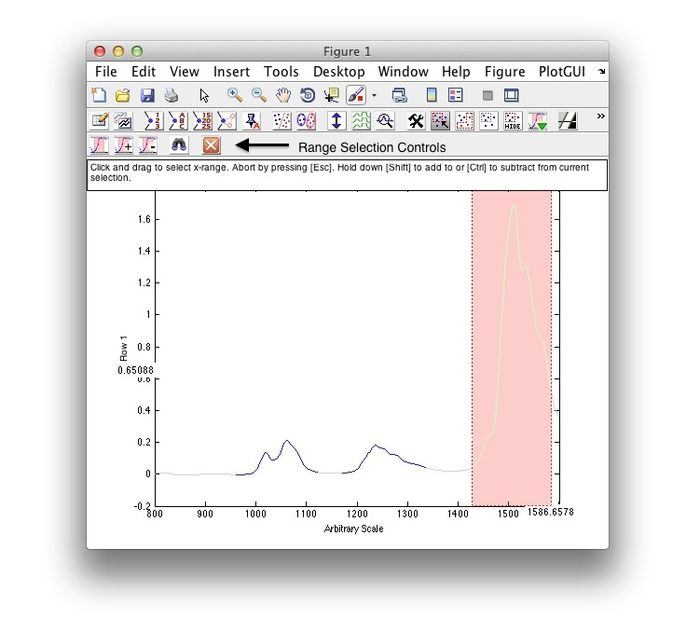

Table of Contents | Previous | Next
Data plotting options
If you open the Plot Controls window from the Plot option on the context menu, the Plot Controls window opens with the same set of options for plotting summary statistics (mean, standard deviation, and mean +/- standard deviation) for all of your data samples. The default plot that is generated is the mean response across all of your samples for all of your variables. You can, however, plot your data anyway that you want.
- To generate an overlay plot of all of your samples for all of your variables, click Data.
|
- To generate a plot of the standard deviation across all of your samples for all of your variables, click StdDev.
|
- To generate a plot of the mean response across all of your samples for all of your variables plus or minus one standard deviation, click Mean+StdDev.
|
- To generate a plot that shows the number of missing observations for each variable, click Number Missing.
|
- To select any combination of samples for plotting against all variables, on the Plot Controls window main menu, click Plot > Rows. CTRL-click to select multiple and/or non-contiguous samples.
|
- To select any combination of variables for plotting against all samples, on the Plot Controls window main menu, click Plot > Columns. CTRL-click to select multiple variables. (This plot is useful for viewing trends for one or more variables for all samples.)
|
- To change the scale of a plot, on the Plot Controls window menu, click View > Auto Y-Scale and select the option that makes the most sense for your given set of data.
|
- To review the co-linearity of variables, plot a variable on the X axis as the function of another variable on the Y axis.
|
Data selection and editing options
The Plot Controls window and the toolbar on the Plot window contain a number of options for selecting data and for modifying the data that you are viewing. If you choose to plot columns of data, then the resulting plot is for every row (sample) for the selected columns. If you choose to plot rows of data, then the resulting plot is a plot for every column (variable) for the selected rows.
Note: Unless specifically stated otherwise, all menu options discussed below refer to the options on the main menu of the Plot Controls window.
- To select only part of the data that you are viewing for plotting, do one of the following:
|
- Click Select on the Plot Controls window, and then click and drag your cursor around the data points to select them.
|
- On the Plot Controls dialog box, click Tools, and select your tool of choice, and then on the Plot Controls dialog box, click Make Selection, and then click and drag your cursor around the data points to select them.
|
- The color of the selected data points is changed, not only in the currently active plot, but also, in any other open plots that contain the samples.
- To select one or more of the classes that are displayed in the current plot, click Edit > Select Class.
|
- To select all items that are currently displayed in the plot, click Edit > Select All.
|
- Note: Items that are excluded are not displayed in a plot, and therefore, are not selected.
- To select only excluded items, click Edit > Select Excluded.
|
After you have made a selection, a variety of options are available for working with the selected data.
Note: These options are enabled only if the data is editable.
- To exclude (mark as "Do Not Use") the selected items from the data, click Edit > Exclude Selection.
|
- To include only the selected data items, click Edit > Include Only Selection.
|
- To include items again which were previously excluded and are now selected, click Edit > Include Selection.
|
- Note: You might need to click View > Excluded Data to select the excluded items, or click Edit > Select Excluded.
- To change the class of the selected data, click Edit > Set Class of Selection.
|
- To create or edit the Axisscale of the selected data, click Edit > Set Axis Scale of Selection OR use right click and select Set Axis Scale.
|
- Note: This will clear the current model.
- To make the selected data "Missing," (replace the values of the data with Not-a-Number values), click Edit > Make Selection Missing.
|
- Note: This is a permanent action. You cannot undo it.
Other options
In addition to the options for plotting data, and for selecting and editing data, the Plot Controls window contains options for displaying information about other DataSet fields.
Note: Unless specifically stated otherwise, all menu options discussed below refer to the options on the main menu of the Plot Controls window.
- To view the data for the currently selected/active plot in a table, click View > Table. The table is displayed in a Plotted Data window. You can click Edit > Copy to copy the data table, and then use standard menu or keyboard commands to paste the copied table into a word processing or presentation application.
|
- Note: The Plotted Data window is an independent window that is not linked to the Plot Controls window.
- To view data (samples or variables) that you have excluded from analysis in the currently selected/active plot, click View > Excluded Data. The excluded data is displayed on the active plot with the same symbol as the included data, but in a color that is several shades lighter to distinguish it from the included data.
|
- To generate a probability plot for data, right-click on the plot and on the context menu that opens, click Probability Plot > Best Fit (automatic). Solo automatically determines the best distribution plot for the data and displays the plot in a Figure window. To manually generate a different distribution plot, click Distribution on the Figure window's main menu, and then select a different plot type.
|
- Note: The Figure window is an independent window that is not linked to the Plot Controls window.
- To open a text box that displays critical parameters for a regression model including the RMSEC and the RMSECV, right-click on a plot for the regression model. Click Show on Figure to display this text box on the plot in the Plot window.
|
- If you have multiple samples or variables plotted in a single Plot window, in lieu of adding a legend to the plot, you can add text that identifies each plot individually. Right-click on each plot in the Plot window, and on the context menu that opens, click Identify Curve.
|
- To exclude raw data (samples or variables) before analysis, right-click on the plot in the Plot window and on the context menu that opens, click Exclude Curve. The excluded sample or variable is marked with a double arrow in the Plot Controls window.
|
- To duplicate the currently selected/active plot, click View > Duplicate Figure. The duplicated plot is linked to the original plot-whatever samples or variables that you select in the original plot are automatically selected in the duplicate plot.
|
- To generate a separate, standalone view of the currently selected/active plot, click View > Spawn Static View.
|
- Note: The Static View function is useful for creating snapshots of all your plots during data analysis for before and after comparison purposes. The static plot is a copy of the currently selected/active plot that is contained in an independent Figure window that is not linked to the Plot Controls window.
- To export the currently active/selected plot to Microsoft PowerPoint or Microsoft Word, click Export Figure, and then click To Microsoft Power Point or To Microsoft Word as appropriate. If PowerPoint or Word is not open, Solo opens the application and places the figure in a slide in a new PowerPoint presentation or in a new blank Word document. If PowerPoint or Word is open, Solo places the figure as the next slide in the currently active PowerPoint presentation or at the insertion point in the currently active Word document.
|
- Note: This option is available only for a Windows operating system.
- To copy the currently selected/active plot to your computer's clipboard, click Edit > Copy Figure. Use standard menu or keyboard commands to paste the copied figure into an application that allows for the pasting of graphics.
|
- To copy the data for the currently selected/active plot in a tabular format to your computer's clipboard, click Edit > Copy Plotted Data. Use standard menu or keyboard commands to paste the copied figure into an application that allows for the pasting of tabular data.
|
- Note: The Edit > Copy Plotted Data option is essentially a single step shortcut for the two step approach of View > Table and then Edit > Copy.
Search Bar
Selecting Search Bar from the Edit menu in the plot controls will open a toolbar at the bottom of the current plot. Depending on the mode being plotted, the appropriate fields and sets will be available in the Source drop-down menu. Typing a term in the Search For text field will automatically select data that matches the term.

- When searching for numeric fields (class or axisscale), numeric value is implied with square brackets ([]) or with relational operators (<, >, >=, <=).
- When using relational operators, the use of logical terms "and" and "or" can be combine multiple comparisons: <3 or >5
- Search terms are case insensitive unless surround by double quotes (""). Note the image above, the term (s) is searched for case insensitive, if the term had been ("S") on the SH samples would have been selected.
- Regular Expressions can be used for searching text with the prefix (re:).
- A "informal" wildcard (*) can used in the search term. The wildcard acts similar to SQL wildcards.
- Sample Index can be used for selecting via indexing with the prefix (si:).
Examples String Searches (Label/Class fields)
| Term |
Description
|
| s |
Finds all values with a capital or lower case s.
|
| "S" |
Finds only values with capital s.
|
| s* |
Finds values starting with s.
|
| re:\d{2} |
Regular expression finds values containing 2 digits.
|
| * |
Selects all.
|
Examples Numeric Searches (Index/Axisscale/Class fields)
| Term |
Description
|
| [2 4] |
Finds values that are equal to 2 or 4.
|
| >3 |
Finds values greater than 3.
|
| >3 and <6 |
Finds values greater than 3 and less than 6
|
| si:[10:20] |
Use sample index to select 10:20.
|
| * |
Selects all.
|
Graphical Selection
Several graphical selection tools are available from the plot toolbar. Along with the standard area selection controls there are also range selection tools useful for making selection of spectra.
Standard (region) selection tools:

Range selection tools:
